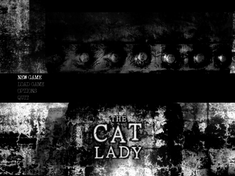
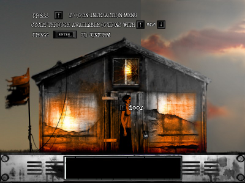

The Cat Lady
Dieser Artikel wurde für die folgenden Ubuntu-Versionen getestet:
Ubuntu 14.04 Trusty Tahr
Zum Verständnis dieses Artikels sind folgende Seiten hilfreich:
The Cat Lady  ist eine alleinstehenden Frau mittleren Alters, welche zurückgezogen mit streunenden Katzen lebt. Ihre Lebenserfahrungen ließen sie eine misanthropische Haltung entwickeln und sie begeht zu Beginn des Spiels einen Suizidversuch. Nach diesem wandelt Susan Ashworth über Felder und der Spieler übernimmt die Kontrolle in der surrealen Traumwelt. In der Spielwelt gilt es, Ashworths Unterbewusstsein und ihre reale Umgebung zu erforschen um ihr eine Perspektive für das weitere Leben zu geben ...
ist eine alleinstehenden Frau mittleren Alters, welche zurückgezogen mit streunenden Katzen lebt. Ihre Lebenserfahrungen ließen sie eine misanthropische Haltung entwickeln und sie begeht zu Beginn des Spiels einen Suizidversuch. Nach diesem wandelt Susan Ashworth über Felder und der Spieler übernimmt die Kontrolle in der surrealen Traumwelt. In der Spielwelt gilt es, Ashworths Unterbewusstsein und ihre reale Umgebung zu erforschen um ihr eine Perspektive für das weitere Leben zu geben ...
|  |  |
| Menü | Spielszene |
Vorbereitung¶
Desura¶
Nach dem Erwerb kann der Spieletitel (TheCatLady_Setup_ENG.exe) über diese Seite heruntergeladen und aufgespielt werden.
gog¶
Nach dem Erwerb des Spiels auf GOG.com über "My Account -> My Games" den Titel herunterladen. Anschließend die Installation der Datei setup_the_cat_lady_2.0.0.3.exe einleiten.
IndieGameStand¶
Den Titel (thecatlady_setup_eng.exe) aus der Bibliothek herunterladen und installieren.
Sofern vorhanden kann alternativ der erworbene Key bei GOG.com oder Desura eingelöst und das Spiel von dort bezogen werden.
Steam¶
Nachdem den Spieltitel im Steam Shop oder den Client erworben hat kann es anschließend über letzteren installiert [6] werden.
Installation¶
Innoextract¶
Mittels innoextract [1] die .exe-Datei entpacken:
innoextract setup_the_cat_lady_2.0.0.3.exe
Die Ausgabe kann wie folgt aussehen:
Extracting "The Cat Lady" - setup data version 5.5.0 (unicode) - "app/acsetup.cfg" (317 B) - "app/audio.vox" (206 MiB) - "app/Cat Lady.exe" (1.01e+03 MiB) - "app/speech.vox" (188 MiB) - "app/winsetup.exe" (92 KiB) - "app/Dat/Doc224.dat" (361 B) - "app/Dat/ego1858.dat" (209 B) - "app/Dat/ego1859.dat" (398 B) - "app/Dat/ego1863.dat" (487 B) - "app/Dat/ego1869.dat" (422 B) - "app/Manual.pdf" (3.96 MiB) - "app/gfw_high.ico" (105 KiB) - "app/goggame.dll" (233 KiB) - "tmp/FoxitReader.exe" (2.57 MiB) - "tmp/get_hw_caps.dll" (76.7 KiB) - "app/GameuxInstallHelper.dll" (94 KiB) - "app/gog.ico", "tmp/gog.ico" (67.6 KiB) ... Done.
Den Ordner app umbenennen, z.B. nach TheCatLady, und nach ~/Spiele verschieben. Der Ordner tmp (sofern vorhanden) kann gelöscht werden.
Spiel-Engine¶
Um das Spiel unter Linux nativ verwenden zu können, ist es nötig, die Spiele-Engine zu erstellen [2]. Nachdem dieser Zwischenschritt vorgenommen wurde, kann das Spiel mit
ags Cat\ Lady.exe
aus dem Installationsverzeichnis heraus gestartet [3] werden. Auf Wunsch einen Menüeintrag [4] vornehmen.
Konfiguration¶
Über Options können Untertitel ein- bzw. ausgeblendet und die Gammawerte eingestellt werden. Über die Konfigurationsdatei acsetup.cfg, welche im Installationsverzeichnis zu finden ist, können mit einem Editor [5] weitere Einstellungen vorgenommen werden.
Tastenkürzel¶
| Tastenkürzel | |
| Taste(n) | Funktion |
| Esc | Menü |
| ← + → | Charakter steuern / Inventar durchsuchen |
| ↓ / ⏎ | Inventar öffnen / Gegenstand aus dem Inventar auswählen |
| ↑ | Inventar verlassen |

- Erstellt mit Inyoka
-
 2004 – 2017 ubuntuusers.de • Einige Rechte vorbehalten
2004 – 2017 ubuntuusers.de • Einige Rechte vorbehalten
Lizenz • Kontakt • Datenschutz • Impressum • Serverstatus -
Serverhousing gespendet von